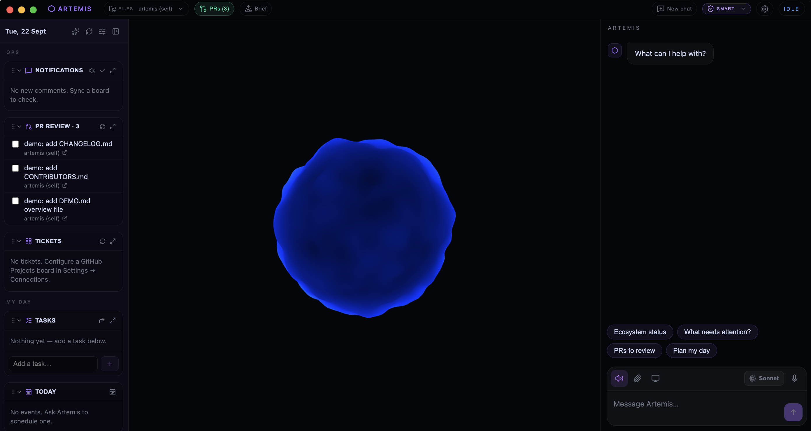
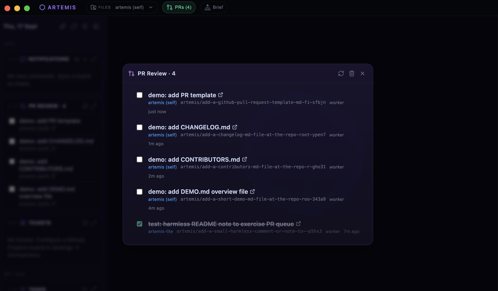
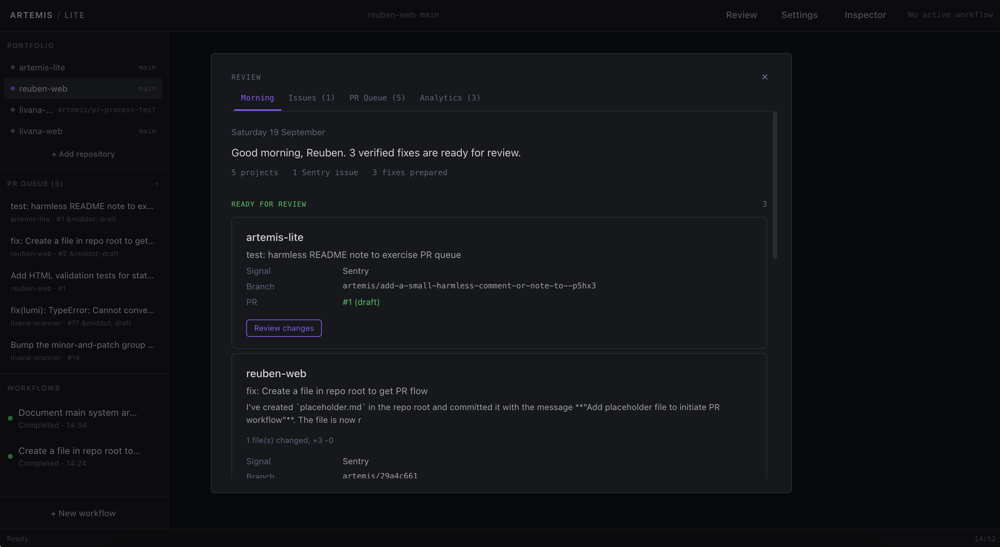
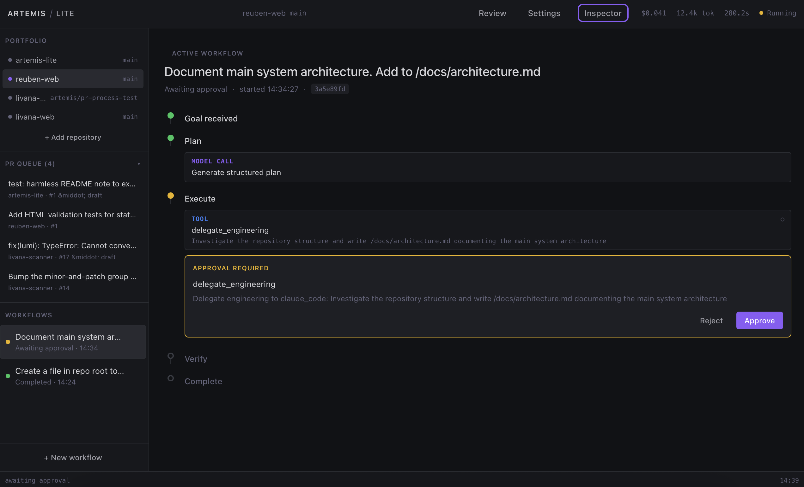
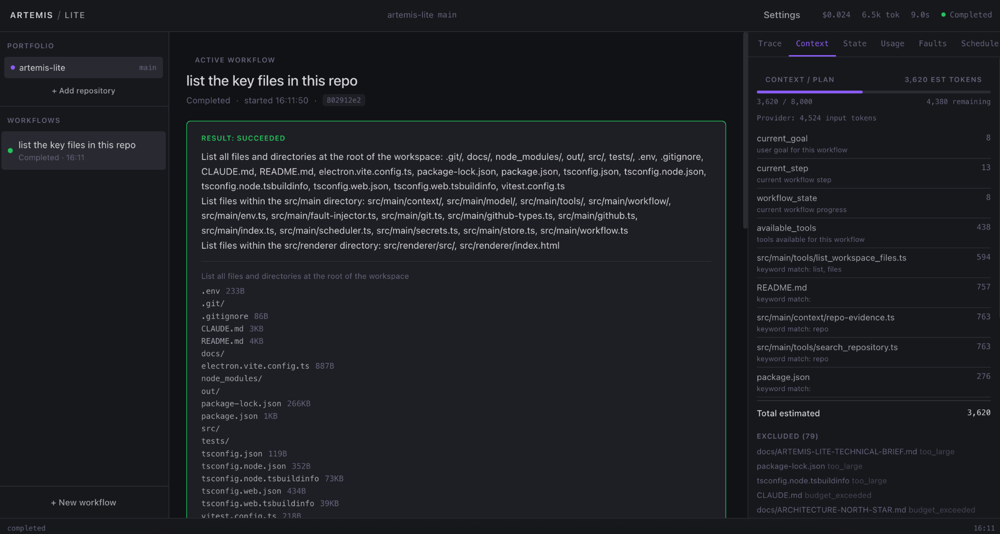
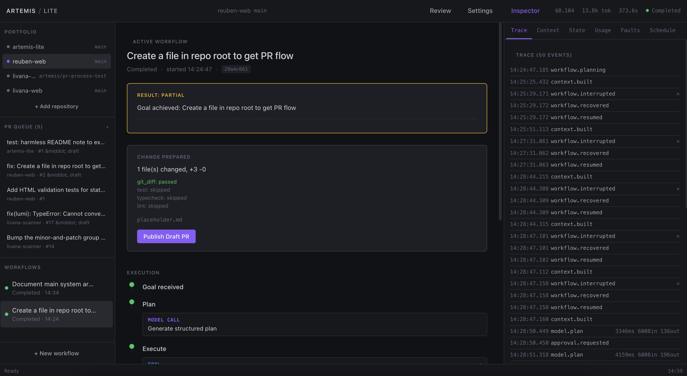

I built an AI system to tend my repositories. Then I rebuilt it.
I built Artemis as a desktop AI operations layer for the software projects I was working across. Rather than treating Claude as a chat interface, I wanted to see what happened when it became part of a persistent system that could understand multiple repositories, monitor their state, dispatch engineering work into isolated worktrees, and return gated pull requests for me to review.
It worked. But building and using it exposed a more interesting engineering problem: giving a model capabilities was relatively straightforward. Controlling the context, state, side effects and recovery around those capabilities was harder.
Artemis Lite is my attempt to rebuild the same idea around that problem.

Artemis: a persistent desktop AI operations layer sitting above multiple repositories.
A.R.T.E.M.I.S. stands for Autonomous Repository-Tending Engineering, Monitoring & Intelligence System. It is an Electron desktop application built on Claude that sits above an ecosystem of repositories rather than inside a single project.
It can register and switch between projects, produce cross-repository morning reviews combining git activity with live Google Analytics data, maintain restart-survivable conversation and memory, and give the model application-owned tools for operating across the whole environment.
The most useful capability is delegated engineering. Artemis dispatches worker agents into isolated git worktrees to implement and test changes, then returns gated pull requests to a review queue.

Workers returned gated pull requests to a review queue, allowing several tasks to run without granting them direct authority over main.
Capability was not the difficult part. Control was.
Giving a model more tools quickly made Artemis more capable. It also made the engineering around those tools more important.
The original agent loop assembled broad project, memory and conversation context, gave the model a large set of tools, and allowed the model to move through tool calls until the turn completed. That worked, but it made several questions increasingly difficult to answer precisely:
What context did this step actually need? What state must survive a process restart? When is a failed action safe to retry? How do you know whether an external side effect already happened? Which decisions belong to the model, and which belong to deterministic application logic? How do you measure whether a more selective architecture is actually better?
As those capabilities accumulated, the harder question became less about what the model could do and more about what the surrounding application should be responsible for.
Give the model less responsibility, without making Artemis less useful.
Artemis Lite started with a different division of responsibility. The goal was not to remove model reasoning. It was to move responsibilities such as workflow state, persistence, permissions, recovery, idempotency, budgets and approvals into application code that could make them explicit and inspectable.
The model could still reason. It just would not also be responsible for remembering what happened, deciding whether a side effect had already occurred, or reconstructing workflow state after a restart.
I wanted to see whether Artemis could still do useful repository work under that constraint. The point was not to reduce it to a toy agent demo, but to rebuild toward the same kind of real engineering tasks.
The model can decide what evidence matters or how to approach a bug. It should not have to remember whether an external action already happened before the process restarted.
An engineering system that keeps working when I'm not there.
Artemis Lite is not intended to be a better interface for running AI workflows manually.
The system I am building is intended to keep working across the software projects I maintain even when I am not there. It will watch repository and production activity, decide when something is worth investigating, carry that investigation through a recoverable workflow, and leave the result waiting for me to review.
Getting there requires signals from the systems I already use. Lite now connects to Sentry for production errors, GitHub for engineering activity and Google Analytics for product usage, completing the monitoring circuit across the portfolio.
A production error is evidence, not an instruction. Artemis should first work out which project it belongs to, whether it has already seen the problem and whether it is worth investigating.
Second, the work has to survive the desktop app. Artemis should be able to investigate and work on a problem overnight without the Electron window staying open. Closing the application should not mean losing a workflow that is already in progress.
Third, Artemis does not need to replace tools such as Claude Code or Codex. They can do the implementation work. Artemis is responsible for everything around that work: deciding what they are allowed to work on, giving them the right context, keeping track of progress, checking the result and deciding when I need to step in.
What should be waiting for me when I wake up?
The Morning Review is not a stream of agent activity. It aggregates production signals, investigation results and prepared fixes across the portfolio into a concise record of what changed and what actually needs my attention.

Artemis Lite Morning Review with live Sentry issues, prepared PRs and portfolio analytics across registered projects.
That changes the engineering problem.
A system working unattended across several repositories cannot rely on an ever-growing prompt and a loose collection of tools. It has to know what it was doing before a restart, control what information reaches the model, recover safely from failures and keep a record of what actually happened.
Those requirements became the architecture of Artemis Lite.
The workflow becomes the primary object.
In Lite, a user goal becomes a workflow that is saved as it moves through planning, execution, approval and verification. Important actions sit behind clear boundaries, and approvals, usage and execution history are stored as part of the workflow rather than existing only in the interface.
This means that if Artemis is interrupted, it can recover from what actually happened rather than trying to reconstruct an in-memory conversation.
From issue to Ready for Review.
I wanted to test the architecture on a real engineering task rather than another agent demo.
A workflow is not the same thing as a model session. Artemis owns the durable lifecycle while individual stages can be deterministic, model-assisted or delegated to a specialised capability.
The worker deliberately has a narrow job. It receives a specific task in an isolated environment, makes the change, then hands control back to Artemis for checks and verification. A specialist execution process can exit while the Artemis workflow continues.
Publishing the work is a separate decision. Artemis can investigate, make changes and run checks on its own, but creating the pull request still requires an approval that survives a restart.

Consequential actions pause on a persisted approval. The workflow resumes from exactly this point after a decision, even across restarts.
What did the model actually see?
As Artemis grew, context became an architectural problem. Giving a model access to a repository did not mean it needed the entire repository on every call.
In Lite, context is something I can inspect and measure. For each reasoning step, the Context Builder selects the workflow information, repository evidence and previous tool results the model is likely to need, within a fixed budget. The inspector shows what was included, why it was chosen, what was left out and how much of the available budget it used.

The Context Inspector shows what the model received, what was left out and how much of the available budget each source used.
That turned out to be only half of the problem.
The first real investigation failed.
While dogfooding Artemis Lite, a real Sentry issue appeared in Lumi, one of the projects in the portfolio:
Cannot convert argument to a ByteString because the character at index 25 has a value of 8211 which is greater than 255.
Artemis created an investigation workflow. The model formed a reasonable hypothesis: a non-ASCII character, likely an em dash at U+2013 (value 8211), was reaching something constrained to ByteString values, probably an HTTP header.
The investigation failed verification.
The important failure was not that the model got the answer wrong. The repository discovery capability was too blunt. The investigation searched for ByteString, headers, fetch(, X-, worker. Generic terms like "headers" and "fetch(" reached the bounded result limits and produced noisy evidence. The repository is a monorepo. The relevant implementation could exist beyond the evidence returned to the model.
The search capability had a 200-file global bound, a 50-match result bound, and no directory scoping. Those bounds are intentional. The problem was that Artemis had no way to progressively narrow the search as its understanding of the problem developed.
I could have increased the global search limits. I did not.
Instead, I changed the capability layer so Artemis could progressively acquire evidence: understand the repository structure, identify the likely subsystem, search within that subsystem, inspect candidates, follow references, and then form a hypothesis.
Progressive discovery improved evidence acquisition. But the investigation plan was still generated upfront, before any evidence existed. Repository investigation is adaptive: discovering one subsystem changes what should be inspected next.
I introduced a bounded investigation loop. Artemis retained control of iteration limits, token budgets, persistence, recovery, read-only capabilities and tracing, while the model could choose the next evidence-gathering action and evolve its hypothesis between iterations.
Mechanically, the architecture worked. The real investigation still reached its iteration limit without establishing the root cause.
That was useful evidence in itself. I had made repository investigation more bounded and observable, but I was also beginning to recreate the execution harness of a specialised coding agent using repeated constrained model calls.
The original Artemis idea had always been to coordinate agents and tools across a software ecosystem, not to replace every specialist capability itself. The experiment made that boundary concrete.
For substantial repository engineering, Artemis now delegates the specialist work to an execution engine such as Claude Code. Artemis still owns why the work exists, which product and repository it belongs to, the durable workflow around it, its execution boundaries, the evidence returned, verification, recovery and the human decision that follows.
The interesting test is what happens halfway through.
A successful happy-path demo tells me very little about whether I can trust a long-running workflow. Lite lets me deliberately introduce model timeouts, provider failures, tool failures and process interruptions, then run the same workflow through them again.
Recovery starts from the workflow record in SQLite. Artemis can see which steps already finished, restore an approval that was still waiting and avoid repeating work it knows succeeded.
The harder case is when an external action may have happened just before the interruption. Where possible, Artemis checks the external system first before deciding whether it is safe to try again.
I am not claiming generic exactly-once execution here. Reconciliation has to be designed for the individual capability. The important part is that Artemis treats an uncertain outcome as uncertain instead of hiding it behind another retry. A specialist execution process can be temporary. The workflow around it cannot be.

The trace shows multiple interruption and recovery cycles. Each time Artemis restarts, it resumes from persisted state rather than starting over. The workflow eventually completes with a verified result.
The complete loop now works.
The architecture has now been exercised end to end against real engineering work. Not a synthetic benchmark, but a genuine Lumi production issue that appeared in Sentry:
Cannot convert argument to a ByteString because the character at index 25 has a value of 8211 which is greater than 255.
Artemis carried that production signal through the operational system: resolved the product and repository, constructed the workflow context, delegated the investigation to Claude Code running in an isolated worktree, independently observed what changed, ran verification, persisted the Result, and published a draft pull request to the PR Queue.
The important thing is not the bug itself. It is that real production context travelled through durable workflows, specialist delegation, deterministic verification and a reviewable pull request without any of that being improvised in a model conversation.
Artemis records cost, duration, token usage, trace, verification results and publication state as part of the workflow record. Cost and usage instrumentation exists but requires multiple workflows before it becomes meaningful evaluation evidence.
One important distinction emerged clearly during dogfooding: investigation succeeded does not mean fix verified. The workflow goal was to investigate the issue and identify the likely cause. Claude Code identified the root cause and prepared a one-line fix. Artemis independently confirmed the repository change. But repository-level test and typecheck verification was not clean for that project configuration. The model verifier correctly accepted the investigation result while the deterministic checks reported their actual state. A draft PR is a proposal for human review, not a claim that the fix is production-ready.
Artemis now starts the work without me.
The manually initiated loop proved the architecture. The next step was to remove me from the beginning of the process: Artemis should monitor production signals, decide when something is worth acting on, carry the work through autonomously, and leave the result waiting for me to review.
Artemis now polls Sentry every twenty minutes across all registered projects. New issues are ingested into a durable signal identity layer. Each external problem gets exactly one record, regardless of how many times it is observed. Repeated observations update event counts and timestamps but never regress the signal’s status or discard an existing workflow claim.
When a project’s automation policy permits it, eligible signals (error and fatal severity, not already claimed) are atomically transitioned from observed to investigating via a compare-and-set operation. Only one execution path can win the claim. If workflow creation fails after the claim succeeds, the signal transitions to failed rather than silently becoming eligible for fresh work.
The claimed signal then moves through the same durable workflow as a manually initiated task: planning, specialist delegation to Claude Code in an isolated worktree, deterministic verification, and — if checks pass — automatic publication as a draft pull request. The delegation step is auto-approved for signal-triggered workflows because the automation policy is the prior consent. The human reviews the result via Morning Review or the PR itself, not by approving each individual delegation.
The first autonomously triggered workflow ran against a real LumiLens production error. The signal collector ingested the Sentry issue, claimed it, created the workflow, delegated investigation to Claude Code, and completed verification — all without manual intervention. The result and trace were waiting in Morning Review.
The interesting engineering in this layer was not connecting to Sentry. It was the deduplication invariants, the atomic claiming, and the fail-closed semantics that ensure a production problem can never silently fall through the cracks: either it produces useful work, or it visibly fails in a way that can be inspected and retried.
Beyond the desktop app.
The signal collector and workflow orchestrator are pure Node.js and SQLite. They do not require the Electron window to be open. The natural next step is to extract the autonomous monitoring into a background service that runs independently of the desktop application, with the Electron client becoming an inspection and review interface rather than the execution host.
After that, the interesting step is to bring these lessons back into the richer product idea that started this project: the original Artemis interface, with the more deliberate system underneath it. Lite is not the destination. It is where I am working out what Artemis 2.0 should actually be.
The model is only one part of the system.
Building Artemis changed how I think about AI product engineering. The first challenge was capability: connecting a model to repositories, tools, memory, monitoring and workers. The harder challenge appeared once those capabilities started doing real work.
Once an AI system starts doing work that lasts longer than a single conversation, a lot of ordinary software engineering becomes important again. It needs to remember what happened, survive restarts, control what the model is allowed to do, recover from failures and leave enough evidence to understand why something went wrong.
It also needs a clear answer to a less obvious question: what should the model not be responsible for?
Lite also made another boundary clearer. Making a specialist task more bounded and observable does not necessarily mean the surrounding system should implement that specialism itself. Sometimes the better architecture is to retain control of the workflow and delegate the specialist work.
The signal system reinforced this further. The hardest part of autonomous monitoring was not fetching data from Sentry. It was ensuring that a production problem could never produce duplicate work, that a failed workflow could never silently become eligible again, and that the system failed visibly rather than quietly dropping signals. Those are database invariants and state machine semantics, not model capabilities.
Artemis Lite is my attempt to make those boundaries visible. The model reasons. The application remembers what happened.